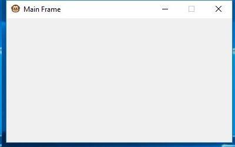

# -*- coding: utf-8 -*-
# Chapter 1: wxPython starting points
# Recipe 2: Adding the main frame
#
import wx
class MyFrame(wx.Frame):
def __init__(self, parent, title="", style=wx.CLOSE_BOX|wx.CLIP_CHILDREN|wx.CAPTION|wx.SYSTEM_MENU|wx.MINIMIZE_BOX|wx.RESIZE_BORDER):
super(MyFrame, self).__init__(parent, title=title, style=style)
# Set an application icon
self.SetIcon(wx.Icon("appIcon.png"))
# Set the panel
self.panel = wx.Panel(self)
class MyApp(wx.App):
def OnInit(self):
self.frame = MyFrame(None, title="Main Frame")
self.frame.Show()
return True
if __name__ == "__main__":
app = MyApp(False)
app.MainLoop()
Style flag
Description
wx.DEFAULT_FRAME_STYLE
This flag is a bit mask of all the other flags described in the
following sections
wx.MINIMIZE_BOX
This displays the minimize button on the title bar
wx.MAXIMIZE_BOX
This displays the maximize button on the title bar
wx.RESIZE_BORDER
This allows the frame to be resized by the user
wx.CAPTION
This displays a title caption on the frames title bar
wx.CLOSE_BOX
This displays the close button on the title bar
wx.SYSTEM_MENU
This displays a system menu (the menu that appears when
clicking on the frame icon on Windows)
wx.CLIP_CHILDREN
This eliminates the flicker caused by background
repainting (Windows only)